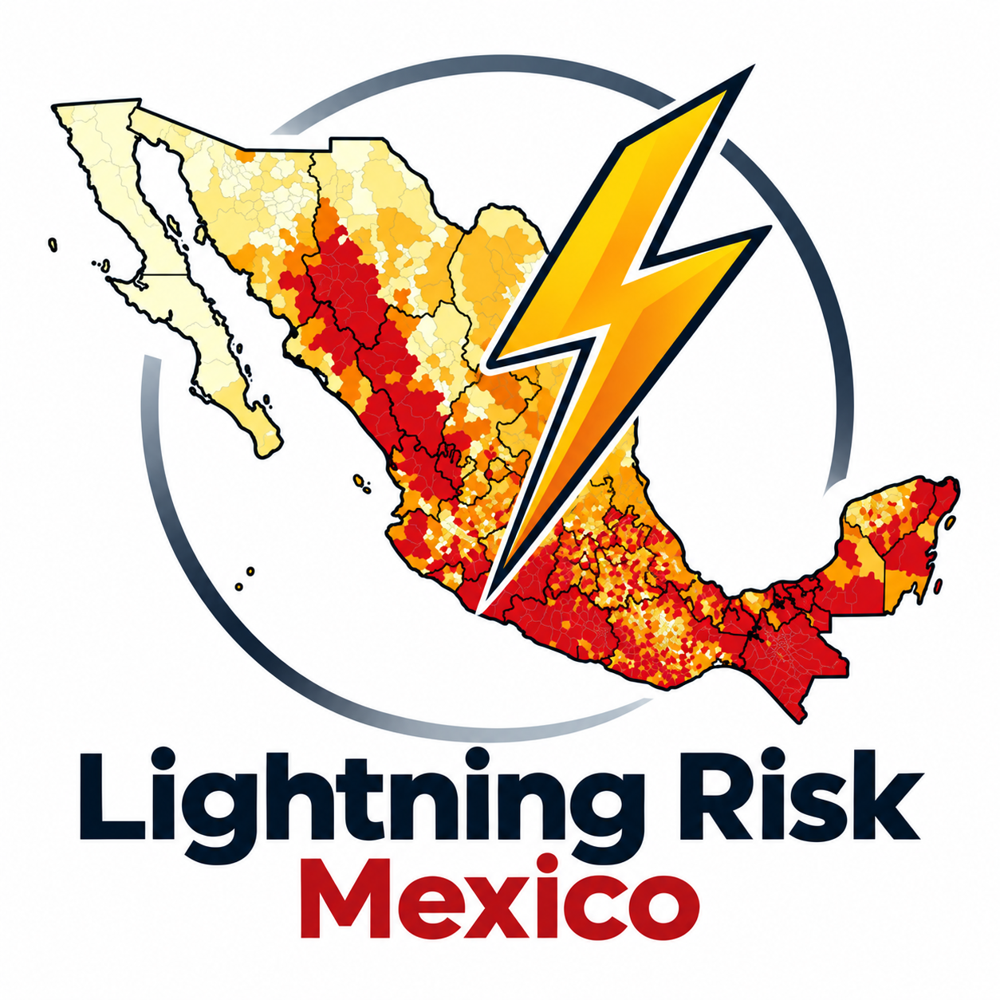
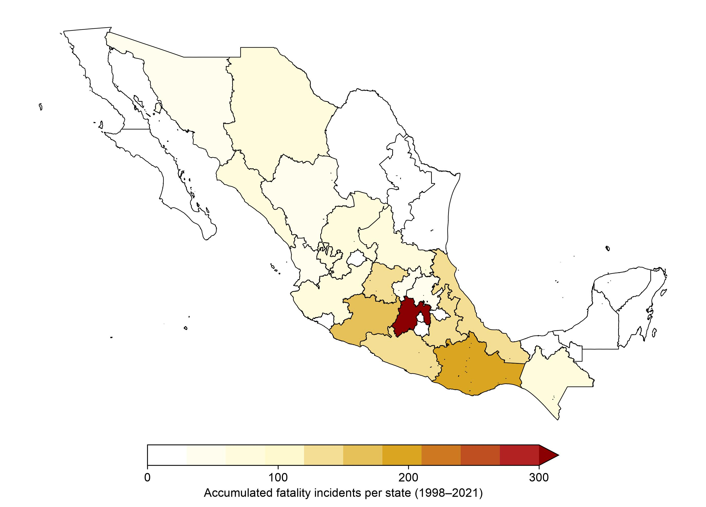
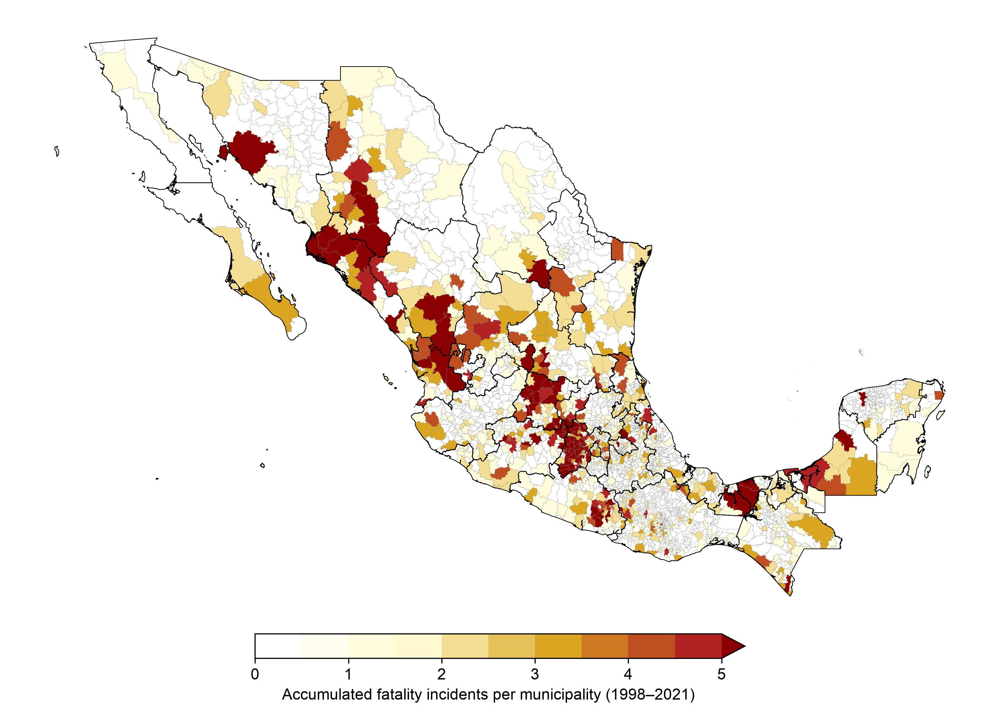
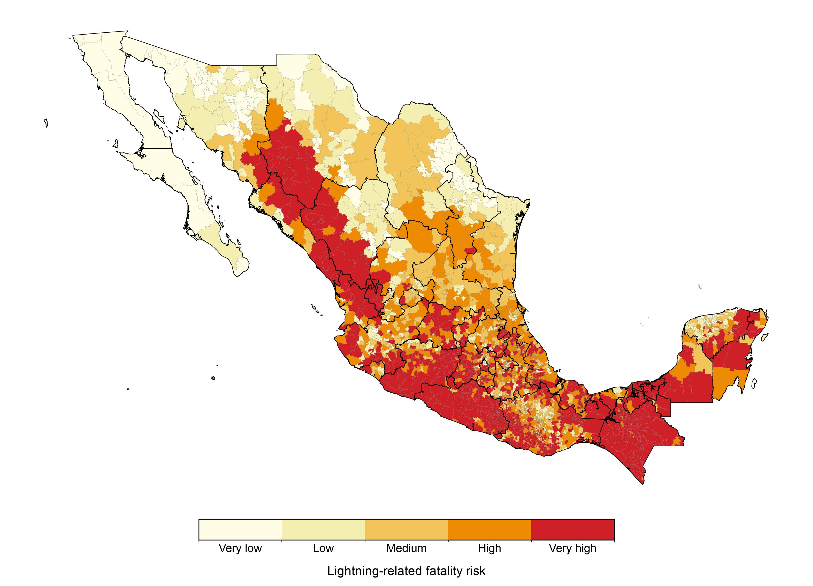

Research Project · Published 2024
Mapping Lightning Risk in Mexico
Integrating natural hazard and social vulnerability

01 / OVERVIEW
Why map lightning risk?
Lightning is a serious, often underestimated threat to human life. Although lightning-related mortality in Mexico has declined over time, fatal incidents continue to affect communities unevenly, especially in rural areas.
This study examines the risk of death by lightning at the municipal level across Mexico. Rather than treating lightning activity alone as a measure of risk, it combines the frequency of days with lightning with the social vulnerability of the communities exposed to those events.
The resulting maps identify areas where atmospheric hazard and social conditions overlap, providing evidence relevant to risk reduction, public safety, and local decision-making.
02 / KEY FINDINGS
Main research findings
Lightning-related fatalities were not distributed uniformly across the country. Important concentrations were identified in central Mexico and parts of western, southern, and southeastern Mexico.
High-risk areas include portions of the Sierra Madre Occidental, the Pacific coast, central Mexico, and the southeast. The findings show why lightning frequency must be interpreted alongside social factors, including conditions associated with rural communities and outdoor work.
Reported mortality has decreased over time, but persistent social vulnerability means that the hazard remains an important public-safety concern.
03 / APPROACH
From lightning hazard to municipal risk
The analysis combines official lightning-fatality records for 1998–2021 with lightning observations and socioeconomic information. The physical hazard is characterized by the mean annual number of days with lightning activity, while social vulnerability is derived from a locality-level marginalization index.
A normalized risk index was first calculated for individual localities using the hazard and vulnerability components. Municipal risk was then represented by the highest locality risk within each municipality, and classified into five levels: very low, low, medium, high, and very high.
This approach highlights vulnerable localities that might be masked by municipality-wide averages.
04 / MAPS
Geographical distribution of lightning-related risk
These three maps summarize the spatial distribution of fatal lightning incidents and municipal risk reported in the study.



Reading the maps: A lightning incident refers to a reported event involving at least one fatality; it does not necessarily represent one death. The five risk classes are relative categories, not individual probabilities of being struck by lightning.
05 / INTERACTIVE ATLAS
Explore the maps
Explore the spatial distribution of lightning-related fatality incidents and lightning risk across Mexico using our interactive atlas.
The atlas provides three complementary maps: accumulated fatality incidents by state, accumulated fatality incidents by municipality, and municipal lightning-risk categories. Users can explore individual locations, search municipalities, and examine regional patterns.
06 / DATA DOWNLOAD
Download the geospatial datasets
The original municipality-level results are available as tables in the supplementary material of the published article. For easier use in Geographic Information Systems, LightningRiskMX provides ready-to-use GeoJSON files that represent these published results using municipal boundaries obtained through the CONABIO Geoportal (cartography attributed to INEGI).
The archived v1.0 dataset includes:
municipal_lightning_incidents.geojson— fatality incidents by municipality (1998–2021).state_lightning_incidents.geojson— incident counts aggregated by state.municipal_lightning_risk.geojson— municipal risk classification (very low to very high).
Download LightningRiskMX v1.0 on Zenodo ↗
Dataset DOI: 10.5281/zenodo.23525980
How to cite these data: When using the GeoJSON files, risk classifications, or derived maps, please cite both the original research article (2024) and the LightningRiskMX v1.0 dataset (2026). Full references are provided below. The geographic boundaries are subject to the applicable INEGI/CONABIO attribution and reuse conditions.
07 / CITATION
How to cite the research and data
Original research article: Jaramillo, A., & Dominguez, C. (2024). Mapping Lightning Risk in Mexico: Integrating Natural Hazard and Social Vulnerability. Weather, Climate, and Society, 16(3), 563–574. https://doi.org/10.1175/WCAS-D-23-0151.1
Geospatial dataset (v1.0): Jaramillo, A., & Dominguez, C. (2026). LightningRiskMX v1.0: Geospatial Representation of Lightning Fatality Incidents and Risk in Mexico (Version v1.0) [Dataset]. Zenodo. https://doi.org/10.5281/zenodo.23525980
The LightningRiskMX GitHub repository ↗ provides documentation and the development history of these geospatial products.
The results are based on reported fatalities and historical lightning data. Potential underreporting, particularly in rural areas, and biases in lightning detection should be considered when interpreting the maps. Web-optimized geometries are intended for visualization rather than precise boundary analysis.